HIMALAYAN ART
喜马拉雅艺术
山口、河谷与神圣的形体
山口与河谷之间，图像也在不断相遇：克什米尔的黄铜、东印度的黑石、加德满都的木与金，以及高原上展开的色彩。
它们曾被供养、携带、装藏、修补，如今散见于不同博物馆。把这些亲见的作品放在一起，是为了让一次次短暂的凝视，慢慢连成可以继续追问的历史。
从斯瓦特、克什米尔与尼泊尔到西藏，也收入与这些传统相连的东印度作品及部分宫廷供养器物。这里保留佛教与印度教各自的尊名，从材料、图像与礼拜实践寻找联系。
REGIONS & ENCOUNTERS
山口与河谷之间
从地区与传统进入，再看看这些作品在哪些展柜中相遇。一个地名，有时指制作地域，有时指风格或寺院的联系；具体关系留在每件作品的资料里。
展开／收起地图
区域示意，不是精确制作地址或迁徙路线。底图：Natural Earth，公共领域；以现代地理作参照。
斯瓦特、吉尔吉特与克什米尔
山口与河谷
从约600年的供养铭文出发，看不同河谷如何塑造佛与菩萨的身体。
帕拉时代的造像与宇宙
东印度的余响
帕拉时代东印度的石雕与金属像，为理解尼泊尔、西藏的视觉传统提供了重要参照。

李查维、尼瓦尔与共同的神圣世界
加德满都的手艺
金属、木与彩绘既构成佛教图像，也服务于山谷中的印度教礼拜。

古格、俄尔与丹萨替
高原上的传承
图像在小画、传承肖像、曼荼罗与纪念塔之间，获得不同的秩序。
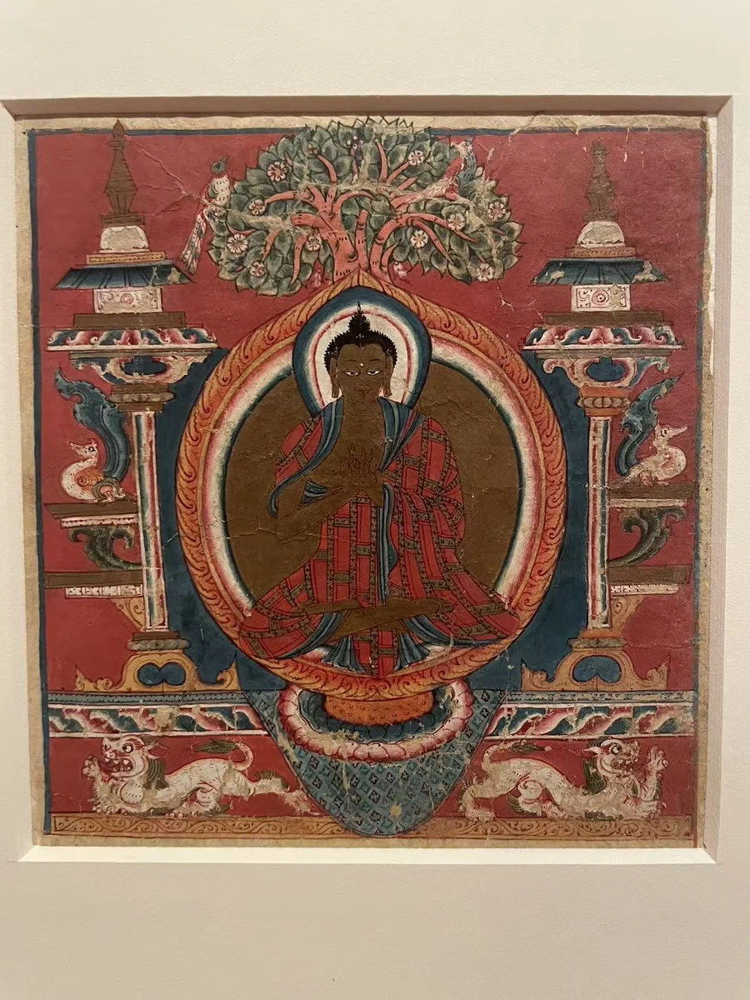
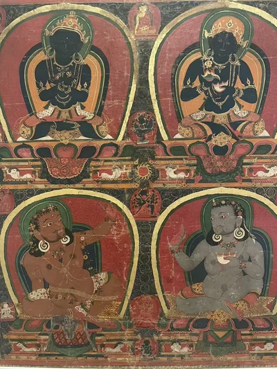
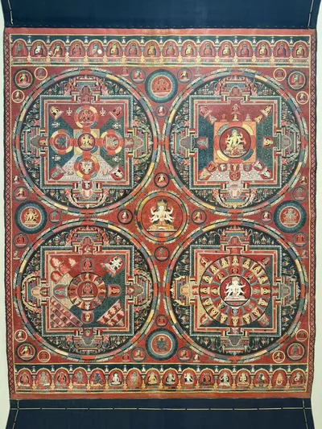
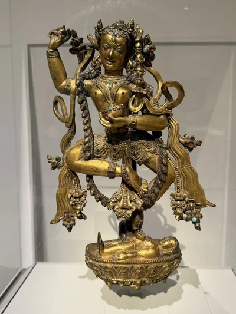
16 / 细读
散落在不同展柜里的丹萨替
西雅图的摄召金刚亥母、卡洛斯博物馆的吉祥天母，以及克利夫兰的承托柱，曾在纪念塔的不同层级中承担各自的角色。
摄召金刚亥母：丹萨替构件 · 14世纪末—15世纪初
展开照片与札记 →本尊、空行母与有名的艺术家
寂静与炽烈
从持物、姿态和材料进入复杂造像，慢慢看清差别。


装藏、经板与供养
让图像成为在场
从装藏、经板与佛塔，回到供养、宫廷赠献和佛堂中的相遇。
THE VIEWING RECORD
完整亲见目录
111条作品／组合记录，以及1条佛堂陈设记录。同一件作品的重访照片合并保留。
展开目录 · 查找作品与现场资料

六品佛楼佛像组合
1758—1778年
故宫博物院藏
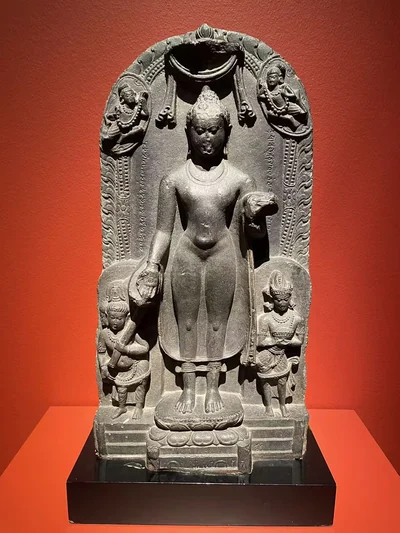
佛自忉利天降下
9世纪
私人收藏；展出地点待核
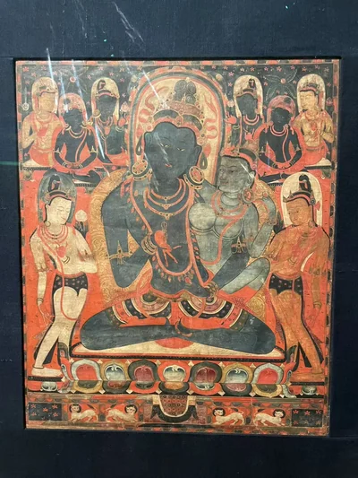
金刚萨埵与明妃
13世纪上半叶
吉美博物馆
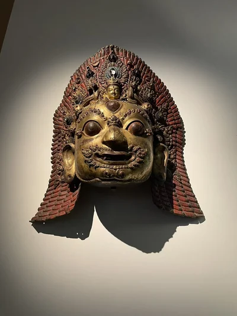
湿婆怖畏面具
16世纪末—17世纪初
吉美博物馆
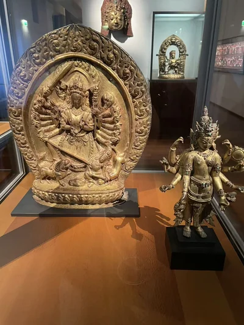
降伏水牛魔的难近母
17世纪
吉美博物馆
吉祥天—那罗延合体像
15世纪
吉美博物馆
纪年1145年的仪式法冠
1145年
吉美博物馆
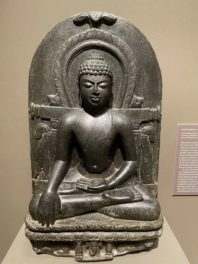
释迦牟尼降魔成道
10世纪
迈克尔·C·卡洛斯博物馆
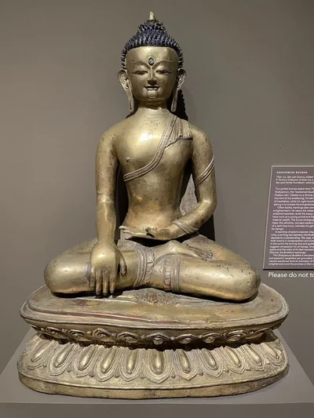
释迦牟尼坐像
约13—14世纪
迈克尔·C·卡洛斯博物馆
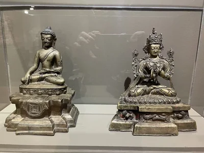
小型释迦牟尼坐像
14世纪
迈克尔·C·卡洛斯博物馆
小型弥勒坐像
15世纪
迈克尔·C·卡洛斯博物馆

吉祥天母：丹萨替纪念塔构件
15世纪
迈克尔·C·卡洛斯博物馆
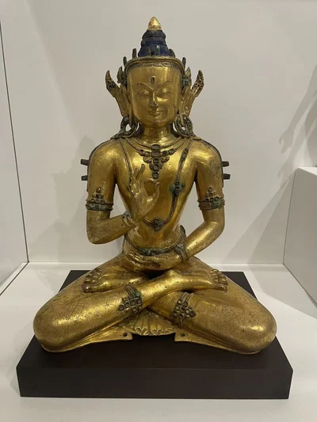
弥勒坐像
16—17世纪
达拉斯艺术博物馆
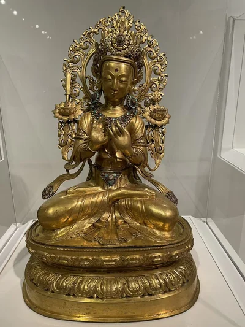
文殊菩萨坐像
18—19世纪
达拉斯艺术博物馆
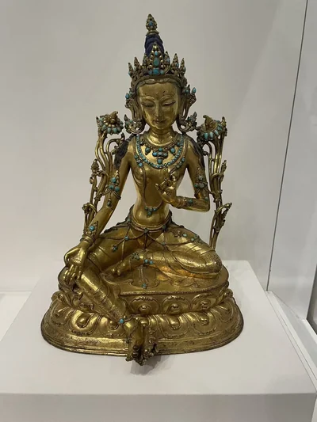
绿度母
18世纪
达拉斯艺术博物馆
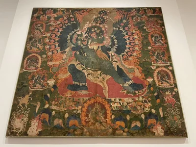
喜金刚唐卡
18世纪
达拉斯艺术博物馆
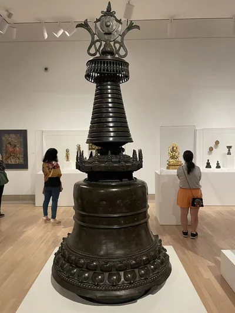
佛塔
12—14世纪
达拉斯艺术博物馆

佛与二菩萨禅定像
7—8世纪
纽约大都会艺术博物馆
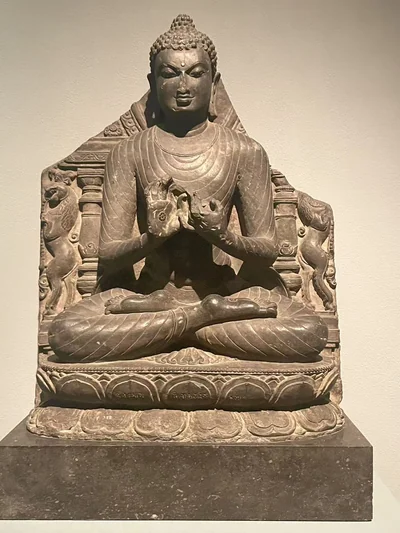
佛初转法轮：有雕刻者署名的石像
11世纪
纽约大都会艺术博物馆
世间自在观音
约1100年
私人收藏；在大都会借展 · 在纽约大都会艺术博物馆展出
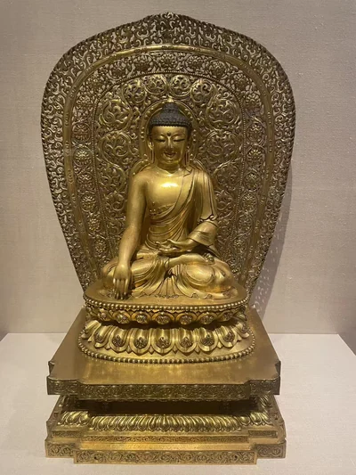
永乐款佛坐像
明永乐时期，1403—1424年
大英博物馆藏；拍摄展出地点待核
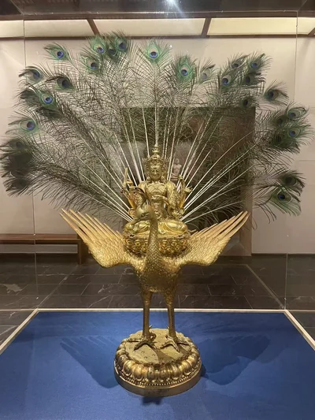
宣德款孔雀明王
明宣德时期，1426—1435年
柏林民族学博物馆藏；拍摄展出地点待核
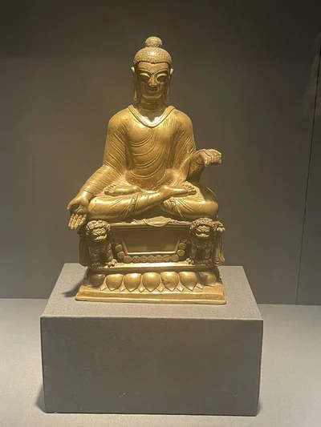
王后供养的施愿佛
约600年
纽约大都会艺术博物馆
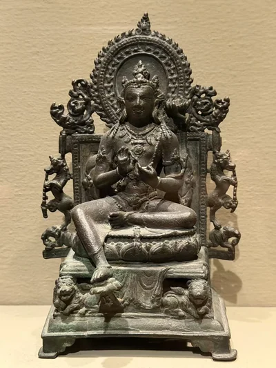
那烂陀文殊
9世纪早期
纳尔逊—阿特金斯艺术博物馆
持莲观音：长老供养铭文
9世纪
纳尔逊—阿特金斯艺术博物馆

弥勒：斯瓦特、吉尔吉特或克什米尔
8世纪
纳尔逊—阿特金斯艺术博物馆
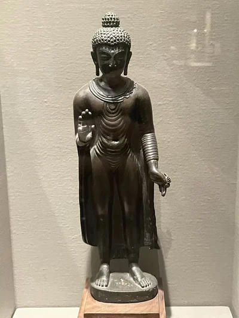
克什米尔佛立像
9—10世纪
纳尔逊—阿特金斯艺术博物馆
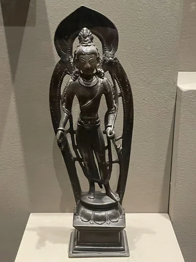
克什米尔持莲观音
10世纪
纳尔逊—阿特金斯艺术博物馆
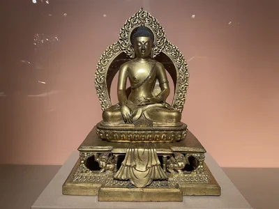
触地印佛坐像
18世纪
休斯顿美术馆
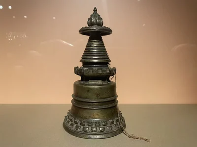
噶当式佛塔
13世纪
休斯顿美术馆
持兵器形喜金刚与无我佛母
约1531年
休斯顿美术馆
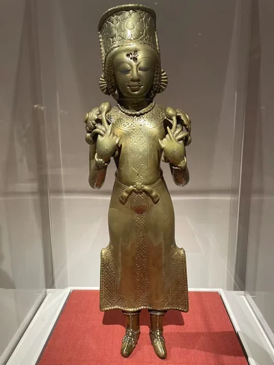
太阳神苏利耶
8世纪早期
克利夫兰美术馆

狮座宝冠佛
8世纪
克利夫兰美术馆
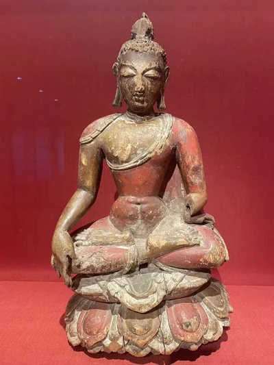
彩绘木佛坐像
11世纪
克利夫兰美术馆
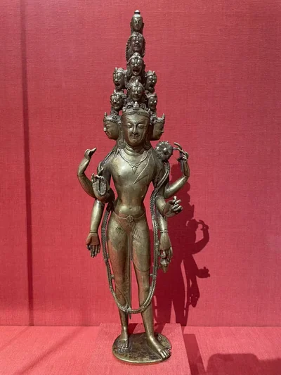
十一面观音
约1000年（现行馆录）
克利夫兰美术馆
曾由西藏王族僧人供奉的克什米尔佛
约900年
克利夫兰美术馆
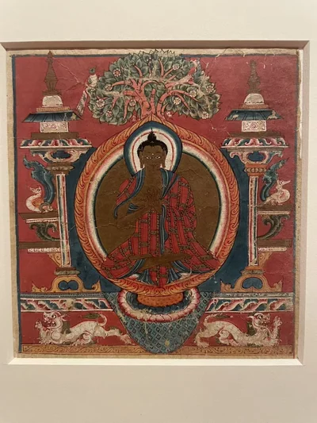
托林寺说法佛灌顶小画
11世纪
克利夫兰美术馆
金刚持、无我佛母与毗瓦巴、甘诃
约1450年
克利夫兰美术馆
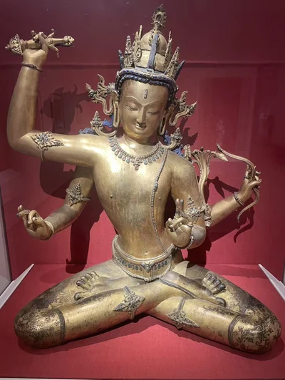
四臂文殊
15世纪
克利夫兰美术馆
克什米尔象牙苦修佛龛
8世纪
克利夫兰美术馆

克什米尔象牙魔军扰佛龛
8世纪
克利夫兰美术馆
却英多杰象牙观音
1647—1648年或1658年
克利夫兰美术馆
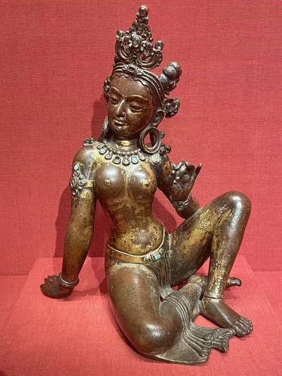
乌玛女神
11世纪
克利夫兰美术馆
泥塑金刚亥母
约1040—1310年（馆方现行断代）
克利夫兰美术馆
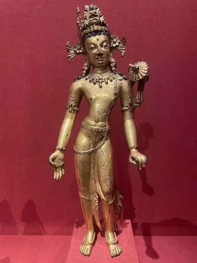
文殊菩萨立像
15世纪
克利夫兰美术馆

大成就者毗瓦巴
15世纪早期
克利夫兰美术馆
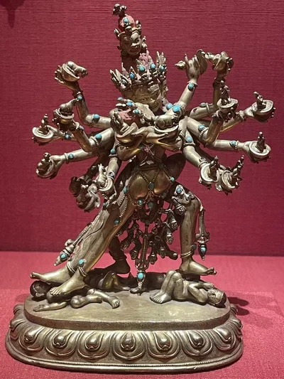
喜金刚与明妃
17世纪
克利夫兰美术馆

永乐宫廷仪式斧与钺刀
15世纪早期
克利夫兰美术馆
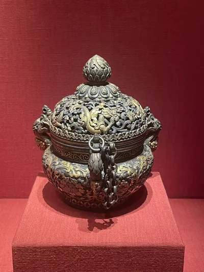
永乐宫廷香炉
15世纪早期
克利夫兰美术馆

帕木竹巴·多吉杰布肖像
13世纪
克利夫兰美术馆
丹萨替背向双面人物支柱一对
15世纪（官网）；旧签1360—1430年
克利夫兰美术馆
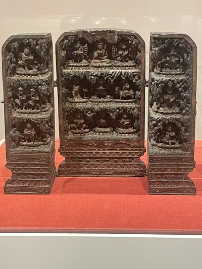
便携木佛龛
约1500年
克利夫兰美术馆
特特拉万触地印佛
9世纪
克利夫兰美术馆

俱利诃尔不动佛
9世纪晚期
克利夫兰美术馆
尼泊尔佛坛
18—19世纪
旧金山亚洲艺术博物馆
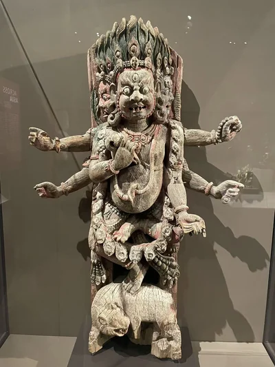
怖畏湿婆木建筑斜撑
约1700年
沃尔特斯艺术博物馆
开光与装藏的观音立像
约1400年
沃尔特斯艺术博物馆
十一面观音：像内的经卷
约1800年
沃尔特斯艺术博物馆
印度教三女神与仪式图
约1800年
沃尔特斯艺术博物馆
仪式金刚橛与曲刀组合
15世纪
沃尔特斯艺术博物馆
手持转经轮
17—18世纪
沃尔特斯艺术博物馆
银制仪式盒
18世纪
沃尔特斯艺术博物馆
弥勒与金属镶嵌
约1500年
沃尔特斯艺术博物馆
身份未定的佛教神祇
15世纪
沃尔特斯艺术博物馆
金刚萨埵
13世纪
沃尔特斯艺术博物馆
大黑天
15世纪
沃尔特斯艺术博物馆
狮面空行母
18世纪
沃尔特斯艺术博物馆
大成就者札兰达拉巴
15世纪
沃尔特斯艺术博物馆
苦行上师
16世纪
沃尔特斯艺术博物馆
龙树：匝巴南杰造像
17世纪
沃尔特斯艺术博物馆
宝冠佛坐像
11—12世纪
沃尔特斯艺术博物馆
普巴金刚与明妃刺绣
15世纪
沃尔特斯艺术博物馆

泥塑金刚亥母
15世纪
沃尔特斯艺术博物馆
时轮金刚与明妃
约1500年
沃尔特斯艺术博物馆
喜金刚与无我佛母
14世纪末—15世纪
沃尔特斯艺术博物馆
俄尔寺大威德金刚曼荼罗
约1515—1535年
Rubin Museum of Himalayan Art藏 · 在西雅图亚洲艺术博物馆／SAM展出
十一面六臂观音
13—18世纪
西雅图亚洲艺术博物馆／SAM
摄召金刚亥母：丹萨替构件
14世纪末—15世纪初
西雅图亚洲艺术博物馆／SAM
施愿印文殊
13世纪末—14世纪
西雅图亚洲艺术博物馆／SAM
明初触地印佛
14—15世纪
西雅图亚洲艺术博物馆／SAM
说法印佛坐像
8世纪末—9世纪初
西雅图亚洲艺术博物馆／SAM
因陀罗
约14世纪
西雅图亚洲艺术博物馆／SAM
俄尔寺堪布桑杰僧格肖像
1580—1590年代
Rubin Museum of Himalayan Art藏 · 在西雅图亚洲艺术博物馆／SAM展出
宣德赐款观音
1426—1435年
西雅图亚洲艺术博物馆／SAM
宝生佛、忿怒尊与中阴诸尊
18世纪
Rubin Museum of Himalayan Art藏 · 在西雅图亚洲艺术博物馆／SAM展出

新娘项链塔约
19世纪末—20世纪初
西雅图亚洲艺术博物馆／SAM
降魔成道佛
约9世纪中叶
西雅图亚洲艺术博物馆／SAM
佛教宇宙供养结构残部
约850—900年
西雅图亚洲艺术博物馆／SAM
触地印释迦牟尼
14世纪
西雅图亚洲艺术博物馆／SAM
噶当式供养佛塔
12世纪
波特兰艺术博物馆
帕拉佛坐像
9—10世纪
纳尔逊—阿特金斯艺术博物馆
毗卢遮那与八大菩萨旅行佛龛
8—9世纪
纳尔逊—阿特金斯艺术博物馆
至上婆苏提婆—那罗延与化身
9世纪
纳尔逊—阿特金斯艺术博物馆
从高处降下的观音
1000—1050年
史密森尼国立亚洲艺术博物馆
白观音：不空羂索观音
14世纪
史密森尼国立亚洲艺术博物馆
触地印佛坐像
14世纪
史密森尼国立亚洲艺术博物馆
持世佛母：纪年1082年
1082年冬
史密森尼国立亚洲艺术博物馆
甘珠尔经板：传承人物
18世纪
史密森尼国立亚洲艺术博物馆
六字观音经板
约18世纪或更早
史密森尼国立亚洲艺术博物馆
藏传佛教佛堂陈设
组合陈设；单件年代不一
佛堂陈设，归属待核；NMAA Kandell佛堂为候选
金刚鬘四曼荼罗
约1429—1456年
金贝尔艺术博物馆

空行观音
11—12世纪
金贝尔艺术博物馆
尼泊尔释迦牟尼立像
7世纪
金贝尔艺术博物馆
五方佛之一，可能为阿閦佛
约12世纪
虚舟收藏（The Xuzhou Collection of Buddhist Art） · 在休斯顿美术馆展出
触地印佛
10—11世纪
虚舟收藏（The Xuzhou Collection of Buddhist Art） · 在休斯顿美术馆展出
银镶衣缝的佛坐像
15世纪
虚舟收藏（The Xuzhou Collection of Buddhist Art） · 在休斯顿美术馆展出
垂足说法佛
8—9世纪
虚舟收藏（The Xuzhou Collection of Buddhist Art） · 在休斯顿美术馆展出

斯瓦特持莲观音
约7世纪
虚舟收藏（The Xuzhou Collection of Buddhist Art） · 在休斯顿美术馆展出
随从形亥母
15—16世纪
虚舟收藏（The Xuzhou Collection of Buddhist Art） · 在休斯顿美术馆展出
降魔触地印佛
约13世纪
虚舟收藏（The Xuzhou Collection of Buddhist Art） · 在休斯顿美术馆展出
尼泊尔持莲观音
约10世纪
虚舟收藏（The Xuzhou Collection of Buddhist Art） · 在休斯顿美术馆展出
文殊童子
10—11世纪
虚舟收藏（The Xuzhou Collection of Buddhist Art） · 在休斯顿美术馆展出
没有符合条件的记录。
沿着同一件作品继续读
资料与摄影
现场摄影：Merton。作品资料依据拍摄展签及各馆公开记录；具体来源随作品列出。地域图中的点与圆用于阅读导航，收藏机构与拍摄展馆分别记录。
作品年代及归属可能随研究更新，旧展签与现行馆录的差异保留在相应作品页。